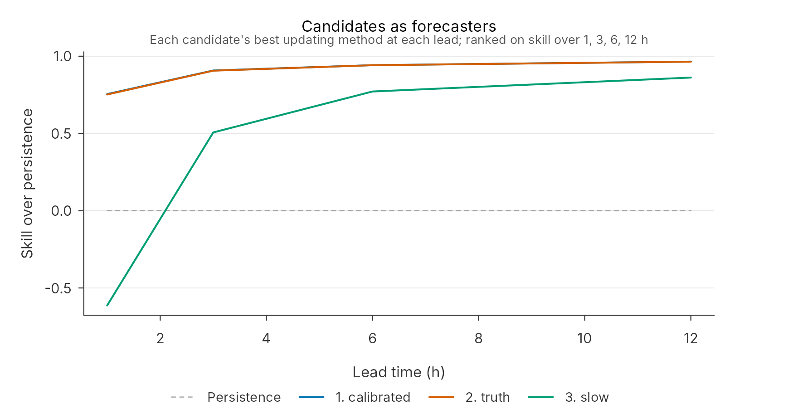

Choosing a model as a forecaster
pdmS7 documentation
Source:vignettes/forecast-choice.Rmd
forecast-choice.RmdCalibrations are usually judged by how well they simulate a whole record from rain alone. A forecasting model does something else. Every few hours it is updated with the latest observed flow and asked what happens next, over a few hours to a day or two. A model that simulates the record a little worse may forecast better, because the updating corrects what it gets wrong and it gets the shape of the next few hours right. The fair test of a forecasting model is to make it forecast.
Hindcasts
A hindcast replays the past as if it were live: from regular points
in the record (the origins), the model is updated with the flow observed
so far and run forward, and its forecast is compared with what then
happened. pdm_hindcast() does this with several updating
methods at once, and with persistence, the forecast that the flow stays
as it is now. skill is one minus the forecast’s mean
squared error over persistence’s: 1 is perfect, 0 no better than
assuming nothing changes.
Three candidates
The synthetic catchment of Counting every error fairly, and three candidate models: the truth, a calibration by NSE, and a model whose surface store is three times too slow.
rain <- synthetic_rain("2017-10-01", years = 3, dt = 1, seed = 5)
truth <- modifyList(pdm_presets("standard"), list(area_km2 = 25))
model <- pdm_from_config(truth)
forcing <- rain[c("time", "rain", "pet")]
set.seed(8)
flow <- run_pdm(model, forcing[c("rain", "pet")], initial_state(model, 0.5))$output$q_m3s
observed <- flow * exp(rnorm(length(flow), 0, 0.15))
start <- modifyList(truth, list(fc = 0.8))
fit <- calibrate_pdm(start, forcing, observed, lower = c(fc = 0.6, surface.k1 = 1),
upper = c(fc = 1.4, surface.k1 = 30), warmup = 24 * 90, start = "soil",
control = list(maxit = 40))
slow <- truth
slow$surface$k1 <- truth$surface$k1 * 3
candidates <- list(truth = model, calibrated = fit$model, slow = pdm_from_config(slow))Ranking by skill
compare_forecasts() hindcasts every candidate alike and
ranks them by mean skill over the lead times that matter. Each is judged
with its best updating method at each lead, as it would be run.
cmp <- compare_forecasts(candidates, forcing, observed, horizon_h = 12, every_h = 6,
leads_h = c(1, 3, 6, 12), ar = list(ea = ar_ea_default()))
cmp
#> Forecast comparison of 3 candidates on 4 lead times, best method, ranked on skill
#> candidate mean_skill mean_threshold leads rank
#> calibrated 0.892 NA 4 1
#> truth 0.891 NA 4 2
#> slow 0.382 NA 4 3
plot(cmp)
Three things stand out. The skill rises with the lead, because persistence gets worse faster than the models do: a river rarely stays as it is for twelve hours. The truth and the calibrated model are equal, 0.891 against 0.892; a difference that small is noise, and the ranking puts the calibration first only by chance. And the model with the slow surface store is worse than persistence at an hour ahead (skill below zero): it is late on every rise, which matters most at the shortest leads. Over the whole record its simulation is not far off; as a forecaster it is plainly the worst.
The lead at which a candidate’s skill falls towards zero is where it stops earning its keep; a model below zero at the leads the service uses should not be used there.
Ranking by warnings
For flood warning, what matters most is whether the forecast crosses
the threshold when the river does, and not when it does not. With
thresholds, each lead also gets the probability of
detection, the false alarm ratio and the critical success index, and
rank_on = "threshold" ranks by one of them.
high <- c(high = unname(stats::quantile(observed, 0.99)))
warn <- compare_forecasts(candidates, forcing, observed, horizon_h = 12, every_h = 6,
leads_h = c(3, 6, 12), ar = list(ea = ar_ea_default()),
thresholds = high, rank_on = "threshold")
warn$ranking
#> candidate mean_skill mean_threshold leads rank
#> <char> <num> <num> <int> <int>
#> 1: calibrated 0.9381353 0.7872944 3 1
#> 2: truth 0.9375491 0.7872944 3 1
#> 3: slow 0.7133214 0.5083333 3 3The critical success index counts hits over hits, misses and false alarms together: 1 is perfect. A model can rank differently on skill and on warnings; for a flood warning service the warnings decide.
One updating method for all
method = "none" judges every candidate open loop, with
no updating: the model alone. That separates what the model knows from
what the updating repairs, and shows how much each candidate leans on
the updating.
compare_forecasts(candidates, forcing, observed, horizon_h = 12, every_h = 6,
leads_h = c(1, 3, 6, 12), method = "none", ar = list())$ranking
#> candidate mean_skill mean_threshold leads rank
#> <char> <num> <num> <int> <int>
#> 1: calibrated 0.8922884 NA 4 1
#> 2: truth 0.8911876 NA 4 2
#> 3: slow 0.3816053 NA 4 3Here the open-loop scores are the same as the best ones: no updating method beat the model alone at any lead. The errors in this made-up record are random from hour to hour, so correcting the forecast towards the latest, noisy, observation does not help. Real errors persist for hours, and there updating usually wins at the short leads; comparing the two rankings shows by how much.
Cautions
- Hindcasts use the observed rain. A real forecast uses forecast rain, which adds its own error and grows with the lead. Hindcast skill is the model’s part of the forecast’s skill.
- Judge on the lead times the service uses. A model best at one hour and worst at six is the wrong model for a catchment that needs six hours’ warning.
- Use the validation years, or the test years, not the calibration years, for the final choice.